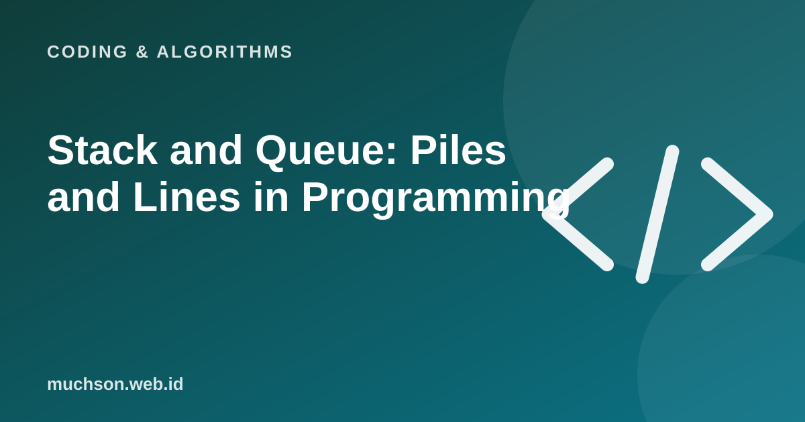

Home › Articles › Coding & Algorithms
Coding & AlgorithmsStack and Queue: Piles and Lines in Programming
These two most basic data structures look simple, but they work behind many things: the undo button, browser history, print queues and the way a computer runs functions. The key is one rule: who comes out first.

Two different rules
Text description of the diagram
Stack - LIFO
- Last in, first out
- Like a pile of plates
- Operations: push and pop
- Examples: undo, page history
- Used in recursion
Queue - FIFO
- First in, first out
- Like a checkout line
- Operations: enqueue and dequeue
- Examples: print queue, messages
- Used in BFS search
Real examples
Python code
# Stack: use a list
stack = []
stack.append("A") # push
stack.append("B")
print(stack.pop()) # B (last in)
# Queue: use a deque so both ends are fast
from collections import deque
q = deque()
q.append("A") # enqueue
q.append("B")
print(q.popleft()) # A (first in)Python tip
In Python, a list already suits a stack. For a queue, use collections.deque, because removing the first element of an ordinary list is slow on large data.
FAQ
What is the call stack?
The stack a computer uses to track the functions that are running. Each function call is piled on, then taken off when it finishes.
What is a stack overflow?
It happens when the stack of function calls gets too deep, for example recursion with no stopping point.
Are there similar structures?
Yes, for example the deque (a double-ended queue) and the priority queue (the most important comes out first).